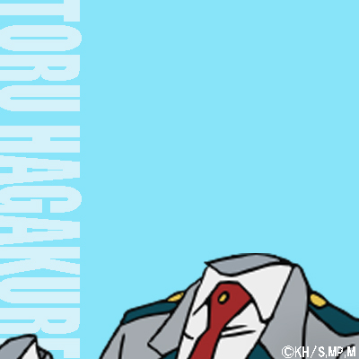
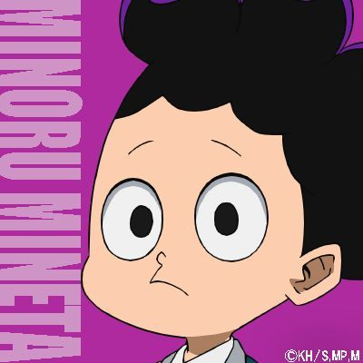

Selecione um Personagem
-

-

- 
- 

Izuku Midoriya - Deku
Embora tenha nascido sem dom, Izuku conseguiu chamar a atenção do lendário herói All Might, devido ao seu heroísmo inato, tornando-se seu aprendiz mais próximo, bem como um aluno da Classe 1-A do Colégio U.A.. All Might passou seu dom para Izuku, fazendo dele o nono portador do One For All.